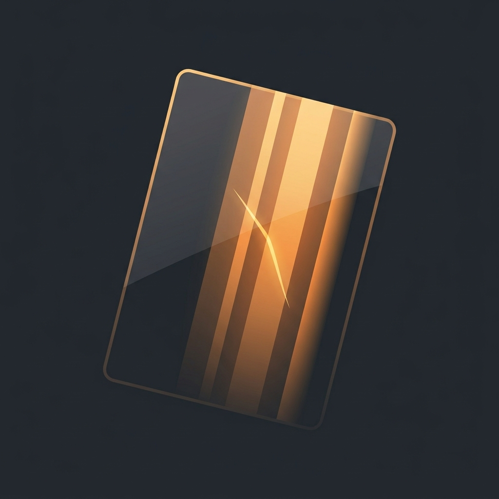

トレカ検品灯は、iPhoneの画面そのものを高輝度の縞ライトに変える、トレーディングカード専用の検品ライトです。カードを画面にかざしてゆっくり傾けるだけで、表面のスレ・擦り傷・白かけ・凹みが、反射した縞の「うねり」として肉眼で見えやすくなります。グレーディング提出前・フリマ出品前・購入時のセルフチェックに。
本アプリは観察を補助するライトであり、カードの真贋やグレードを判定・保証するものではありません。
基本の縞ライト（傷・スレの観察）は無料です。Pro（買い切り・追加課金なし）で、R/G/B・RGBチャンネル光と、実寸センタリングゲージ（ズレ比率の数値表示）が解放されます。
ご質問・ご要望・不具合報告は、お問い合わせフォームよりお寄せください。
Turn your iPhone screen into a high-brightness striped light for inspecting trading cards. Hold a card to the screen and tilt it slowly — scuffs, whitening, and dents on the surface stand out in the reflected stripes. It is an observation aid only; it does not judge or guarantee a card's authenticity or grade.
The basic striped light is free. A one-time Pro purchase (no subscriptions) unlocks R/G/B and RGB channel light and a real-size centering gauge.
The app collects no personal data and works fully offline. See the Privacy Policy.